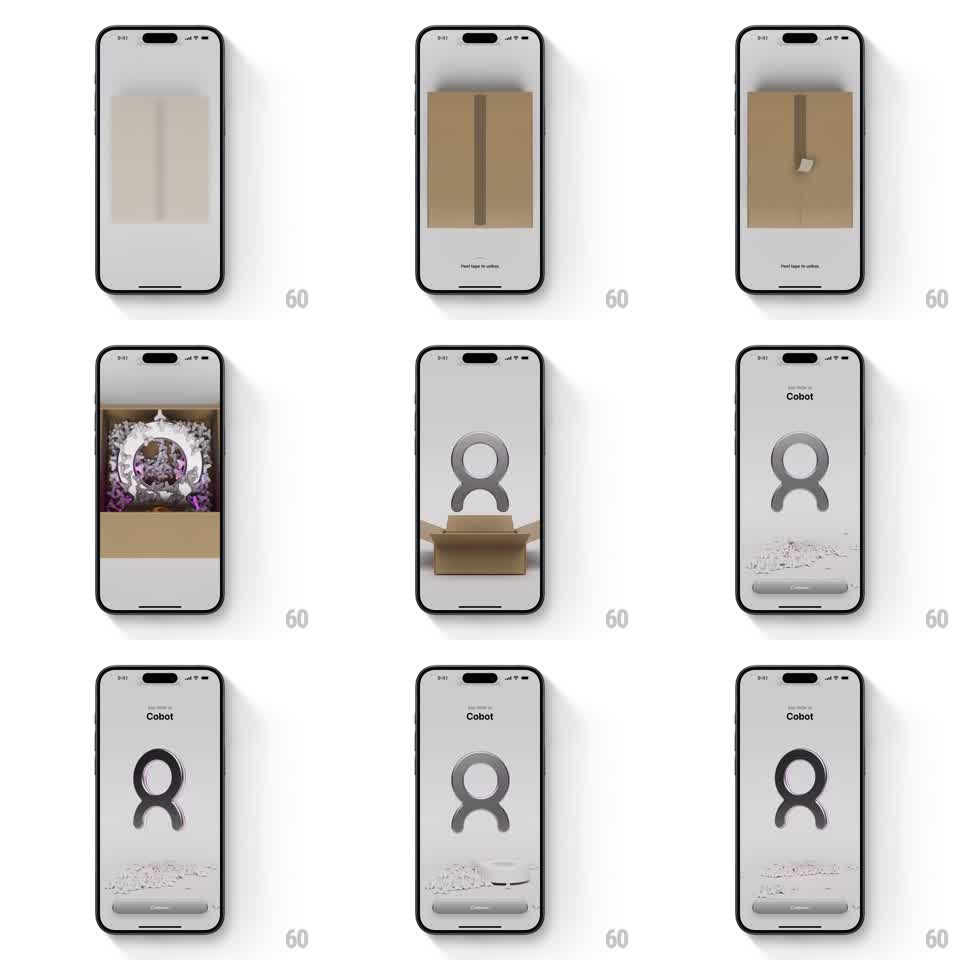

Media
Frame-by-frame

Rebuild this interaction 1:1: Cobot's unboxing onboarding - a sealed cardboard box fills the screen, the user peels the tape strip with a drag, the box flaps spring open to reveal a floating metallic Cobot logo that rises out over scattering packing paper, settling on a light intro screen with "Say hello to Cobot" and a Continue button.

Rebuild this interaction 1:1: Cobot's unboxing onboarding - a sealed cardboard box fills the screen, the user peels the tape strip with a drag, the box flaps spring open to reveal a floating metallic Cobot logo that rises out over scattering packing paper, settling on a light intro screen with "Say hello to Cobot" and a Continue button. ## Integration Integration: stack-agnostic spec - springs given as stiffness/damping, timed motions as duration + curve; map every value to your framework and animation library of choice. ## Scene Neutral light-gray stage. A closed cardboard box with a center tape strip and "Peel tape to unbox" hint. Inside: the Cobot logo - a chunky metallic silver figure - nested in white packing filler. Reveal state: logo floating center with paper scraps scattered at the bottom, "Say hello to Cobot" title above, a Continue pill below. ## Motion spec Pattern: gesture-driven peel with physics reveal. - The tape strip tracks the user's drag 1:1 (translate with finger, slight stretch 1.0 -> 1.05 along the pull axis); a small peel-progress tint follows the drag edge. - Release past 60% peel: the strip tears free (rotate ~30deg, flies off-screen with gravity, 400ms) and the hint fades. - The box flaps spring open outward (rotate around their hinge edges 0 -> -110deg, spring ~260/18, ~450ms) with a cardboard wobble settle. - Packing paper bits burst lightly (10-14 scraps, radial, 500ms, gravity) as the logo rises from inside the box (translateY 80pt -> -20pt, spring ~240/16, slow float). - The box sinks and fades (300ms) as the logo settles floating (idle bob +/-4pt, 2s sine) with a soft metallic sheen sweep across it every 3s. - Title fades in above (250ms), Continue pill below (200ms); scattered scraps stay on the floor. ## Calibration - The peel is gesture-mapped until the tear threshold - never auto-complete before 60%. - The logo's rise is slow and weighty; this is a product reveal, not a pop. ## Reduced motion Tap the tape to open: flaps open with a 300ms ease, logo fades in center, title and button fade in. ## Don't miss - Paper scraps persist on the ground in the final state - evidence of the unboxing. - The metallic sheen sweep is the only ongoing motion after the reveal.